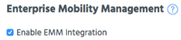

You may also need to refresh the page to update and display the EMM tab.
Use the Enterprise Mobility Management section in Admin > Organization to integrate Appthority with your EMM.
Tick the option Enable EMM Integration, then proceed to next steps.

Tip: Once you select Enable EMM integration in Admin > Organization, you must have an active Connector before the EMM sub-tab will be available. Complete Connector deployment (for on-premises) or enter api credentials and wait briefly (for cloud).
Appthority Connector will display active status once Connector is running.
You may also need to refresh the page to update and display the EMM tab.
Important: If you are using App Scan and want to stop, you must deactivate it in AirWatch (click Reconfigure). You will not be able to deselect it in Appthority until you have done this. Also, the checkbox to Enable EMM Integration on the Organization sub-tab can not be deselected until you disable App Scan in AirWatch, and will appear grayed out. 
Note: Make sure to click Save Changes whenever you make a change to the Organization or EMM sub-tabs. The button is available only when all required info on the page is completed and there are unsaved changes.
Once you have an active Connector, some changes are not available. If Save Changes is available, a confirmation dialog will display for Organization and EMM changes that would rarely be changed after initial setup.